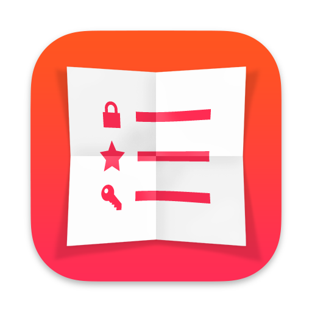

If your Watch and iPhone are failing to stay in sync, try restarting both devices.
If that doesn’t help, give this a try:
On iOS: Open your Settings app and then select Cheatsheet from the list of apps. Select Language and then choose English.
On Mac: Open System Settings > General > Language & Region. Scroll down to the section labeled Applications and then click the plus button to add an app. Choose Cheatsheet from the list and set its language to English.
Please check your language settings on your iPhone by going to Settings app > General > Language & Region. If you see unwanted langauges in your “Preferred Languages” list, tap Edit and remove it (or move it below English in the list). This Apple support page may help: https://support.apple.com/HT204031.
If that didn’t help, or you didn’t see unwanted langauges on the list, please check the language setting on your Watch: Open the Apple Watch companion app on the paired iPhone. Go to My Watch > General > Language & Region. Try setting it to “Mirror my Phone” or if there’s a custom list, remove any unwanted languages.
Cheatsheet Pro unlocks the full potential of Cheatsheet:
Subscribing to Cheatsheet Pro also helps support the ongoing development of the app, which has been in active development for over 10 years.
Apple Notes is a great app but its not ideal for storing bits of information you reference frequently. Cheatsheet is designed for quick-reference, glancable notes — it’s like a bunch of sticky notes around your workspace. Here are some key differences:
Absolutely! Cheatsheet also has strong support for Apple Shortcuts.
cheatsheet://add?text=TEXT%20HERE.